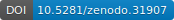
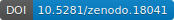
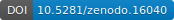
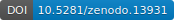
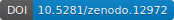

Berkeley Advanced Reconstruction Toolbox
Figure: l1-ESPIRiT reconstruction of a human abdomen (variable-density Poisson-disc
sampling, R=7, RF-spoiled 3D-FLASH, B0 = 3T TR/TE = 4.3/1.0ms, partial echo .6, matrix: 320x256x184, 32 channels)
Total reconstruction time: 51s including compression (14s), calibration (9s), iterative reconstruction (12s),
and other processing steps (16s) on a multi-GPU system.
List of Features
- basic features:
- support for Linux, Mac OS X, and Windows (with Cygwin)
- multi-dimensional operations on arrays
- fast non-uniform Fourier Transform (nuFFT)
- multi-dimensional (divergence-free) wavelet transform
- parallel computation on multiple cores and with Graphical Processing Units (GPU)
- iterative methods:
- Conjugate Gradients (CG)
- (Fast) Iterative Soft-Thresholding Algorithm (ISTA and FISTA)
- Alternating Direction Method of Multipliers (ADMM)
- Iteratively Regularized Gauss-Newton Method (IRGNM)
- calibration methods for parallel MRI:
- direct calibration from k-space center
- Walsh's method
- ESPIRiT
- reconstruction methods for MRI:
- iterative parallel imaging reconstruction: POCSENSE, SENSE
- compressed sensing and parallel imaging
- non-linear inverse reconstruction: NLINV (blind multi-channel deconvolution)
- calibration-less parallel imaging: SAKE (structured low-rank matrix completion)
- regularization (in arbitrary dimensions):
- Tikhonov
- total variation
- l1-wavelet
- (multi-scale) low-rank
Example
Perform ESPIRiT calibration and image reconstruction with l1-wavelet regularization:
$ bart ecalib kspace sensitivities
$ bart pics -l1 -r0.001 kspace sensitivities image_out
A python-based image viewer (bartview.py) which can read the
BART data format is included in the source repository.
An image viewer for Linux and Mac OS X which is currently in development can be found here.
Mailing List
Please direct all questions or comments to the public mailing list:
Download
C/C++ source code: GitHub repository

Releases:
- bart: version 0.3.00 (2016)
- bart: version 0.2.09 (2015) 
- bart: version 0.2.08 (2015) 
- bart: version 0.2.07 (2015) 
- bart: version 0.2.06 (2015) 
- bart: version 0.2.05 (2014) 
- bart: version 0.2.04 (2014)
BART has also been included in Debian GNU/Linux. The Debian binary package can be reproducibly built from the source code (as distributed by Debian) and can be downloaded from here. The package should also work on Ubuntu although this is not guaranteed.
Installation
Installation of the required libraries, downloading and unpacking of the archive, and compilation on Linux is usually as simple as typing the following commands:
$ sudo apt-get install build-essential libfftw3-dev liblapack-dev
$ wget https://github.com/mrirecon/bart/archive/vX.Y.ZZ.tar.gz
$ tar xzvf vX.YY.ZZ.tar.gz
$ cd bart-X.YY.ZZ
$ make
See the README file included with the source code for further instructions and for Mac OS X and Windows.
Matlab Interface
The toolbox can also be used in combination with Matlab/Octave.
>> sensitivities = bart('ecalib', kspace);
>> image_out = bart('pics -l1 -r0.001', kspace, sensitivities);
More examples where the tools are called directly from Matlab can be found here.
Matlab code and data: GitHub repository
A Matlab-based image viewer which works well with BART is arrayShow by Tilman Sumpf.
Workshop Materials
The toolbox was presented at the ISMRM 2016 Data Sampling and Image Reconstruction Workshop.
Demo code and data: GitHub repository
References
- Jonathan I Tamir, Frank Ong, Joseph Y Cheng, Martin Uecker, and Michael Lustig, Generalized Magnetic Resonance Image Reconstruction using The Berkeley Advanced Reconstruction Toolbox, ISMRM Workshop on Data Sampling and Image Reconstruction, Sedona 2016
- Martin Uecker, Frank Ong, Jonathan I Tamir, Dara Bahri, Patrick Virtue, Joseph Y Cheng, Tao Zhang, and Michael Lustig, Berkeley Advanced Reconstruction Toolbox, Annual Meeting ISMRM, Toronto 2015, In Proc. Intl. Soc. Mag. Reson. Med. 23:2486
- Martin Uecker, Patrick Virtue, Frank Ong, Mark J. Murphy, Marcus T. Alley, Shreyas S. Vasanawala, and Michael Lustig, Software Toolbox and Programming Library for Compressed Sensing and Parallel Imaging, ISMRM Workshop on Data Sampling and Image Reconstruction, Sedona 2013
- Martin Uecker, Peng Lai, Mark J. Murphy, Patrick Virtue, Michael Elad, John M. Pauly, Shreyas S. Vasanawala, and Michael Lustig. ESPIRiT - An Eigenvalue Approach to Autocalibrating Parallel MRI: Where SENSE meets GRAPPA. Magnetic Resonance in Medicine, 71:990-1001 (2014)